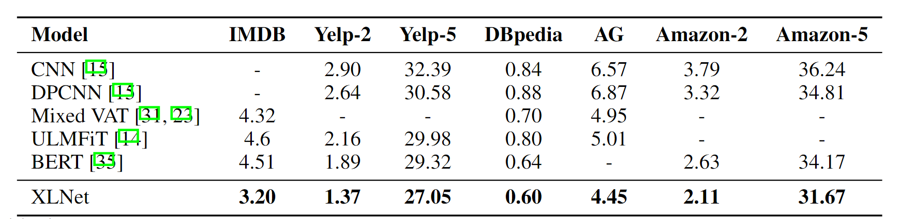
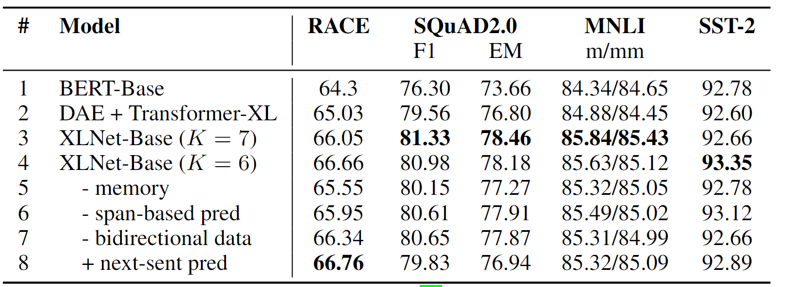

XLNET：基于置换语言任务的自回归模型
摘要
XLNET 是由卡耐基梅隆大学和谷歌于 2019 年提出的自回归预训练模型，论文名为《XLNet: Generalized Autoregressive Pretraining for Language Understanding》，收录于 2019 NIPS 中。其动机是为了解决 BERT 面临的两个问题：忽视了 [MASK] token 间的依赖关系以及 [MASK] 导致的预训练 - 微调差异。 XLNet 在 20 项任务上的表现优于 BERT，通常大幅度提高，包括问答、自然语言推理、情感分析和文档排序。
介绍
自编码 vs 自回归
预训练模型常在大规模语料上，通过构建无监督的预训练目标进行训练。其中，自回归 (AR) 语言建模和自编码 (AE) 是两个最成功的预训练目标。
自编码方法旨在通过从被破坏的输入重建数据，典型的例子为 BERT 的掩码语言模型（MLM），将若干 token 掩码为 [MASK]，通过上下文的其他 token 预测被掩码的 token。类似完形填空任务，将 “我吃饭了” 掩码为 "我吃 [MASK] 了"，预测 [MASK] 为 "饭"。但 BERT 的缺点在于，它对于多个 [MASK] 标记分开预测，换而言之，假设它们是互相独立的，没有考虑它们间的依赖关系。而且，在预训练过程中，[MASK] 的 token embedding 为空，对其后续的上下文表征没有任何帮助。而在下游微调任务中，当前 token 的 token embedding 对其上下文表征是最重要的。这就导致了上下游间的差异。
自回归的方法旨在使用自回归模型拟合语料的概率分布，典型的例子为 GPT 的语言模型。将句子概率 \(p(x)\) 分解为条件概率的乘积，即 \(p(x)=\prod_t p(x_t|x_{<t})\)。这种方法非常符合人的认知，但是缺点是无法利用双向的上下文信息。而双向的上下文信息对于下游的理解任务是至关重要的。
XLNET 希望将 AR 和 AE 的优点结合起来，避免它们的局限性。XLNET 提出了一种名为置换语言模型的预训练目标，即打乱句子的 token 顺序并使用自回归的方法预测。这种方法不依赖于掩码、结合了双向上下文信息、自回归训练。XLNet 在许多下游任务上比 BERT 表现出色，包括 GLUE 语言理解任务、阅读理解任务（如 SQuAD 和 RACE），Yelp 和 IMDB 等文本分类任务，以及 ClueWeb09-B 文档排名任务。
方法
置换语言模型
对于长度为 \(T\) 的序列 \(x\)，存在 \(T!\) 种排列可用于自回归生成。用 \(\mathcal Z_T\) 代表所有长度为 \(T\) 的序列 \([1,2,\cdots,T]\) 的排列集合，\(z_t\) 和 \(z_{<t}\) 分别代表排列 \(z\in\mathcal Z_T\) 的第 \(t\) 个和前 \(t-1\) 个元素。置换语言模型的目标可形式化定义为： \[ \max_\theta \mathbb E_{z\sim\mathcal Z_T}[\sum_{t=1}^Tlogp(x_{z_t}|x_{z_{<t}})] \] 事实上，只需要每次随机采样一个排列序列 \(z\)，优化对数似然即可。而且我们也不需要显式地改变句子顺序，只需要对 Attention 进行掩码即可。后面会介绍到。
双流自注意力机制
虽然已经得到了形式化的训练目标，但是直接使用 Transformer-XL 优化上述目标可能是没什么用的。具体而言，如果使用标准的 softmax 计算下一个 token 的概率分布，即 \(p(X_{z_t}|x_{z_{<t}})\)，公式为 \[ p(X_{z_t}=x|x_{z_{<t}})=\frac{\exp(e(x)^Th_\theta(x_{z_{<t}}))}{\sum_{x'}\exp(e(x')^Th_\theta(x_{z_{<t}})} \] 其中，\(h_\theta(x_{z_{<t}})\) 是 \(x_{z_{t}}\) 的隐藏状态表征，\(e(x)\) 是 \(x\) 的嵌入向量。可以看到 \(h_\theta(x_{z_{<t}})\) 是与要预测的 token 的位置 \(z_t\) 无关的。也就是无论下一个预测的 token 是哪个位置的，得到的概率分布都是相同的。这显然与我们的期望是相悖的。为了解决这个问题，需要重参数化这个概率分布，加入 \(z_t\) 的信息： \[ p(X_{z_t}=x|x_{z_{<t}})=\frac{\exp(e(x)^Tg_\theta(x_{z_{<t}},z_t))}{\sum_{x'}\exp(e(x')^Tg_\theta(x_{z_{<t}},z_t)} \] 其中，\(g_\theta\) 是一种新的、依赖于下一个 token 位置的表征 **。
那么新的问题就来了，怎么建模这个 \(g_\theta\) 呢？从形式上可以看出，\(g_\theta\) 希望在根据位置 \(z_t\) 从已有的上下文 \(x_{z_{<t}}\) 中通过注意力机制收集信息。这样就有了两种略显矛盾的需求：
- 预测 \(x_{z_t}\) 时，\(g_\theta(x_{z_{<t}},z_t)\) 只能依赖位置 \(z_t\) 而非内容 \(x_{z_t}\)
- 预测 \(j>t\) 的其他标记 \(x_{z_j}\) 时，也需要 \(x_{z_t}\) 的隐藏表征，此时 \(g_\theta(x_{z_{<t}},z_t)\) 应该编码 \(x_{z_t}\) 的内容以充分利用上下文信息
那么，就需要两种上下文表征：
- 内容表征 \(h_\theta(x_{z_{\le t}})\)，简写为 \(h_{z_{\le t}}\)，类似标准 Transformer 中的隐藏状态，同时编码上下文和位置
- 查询表征 \(g_\theta(x_{z_t})\)，简写为 \(g_{z_t}\)，只根据 \(h_{z_{<t}}\) 和位置 \(z_t\) 计算得到
为便于计算，查询流的第一层初始化为可训练的向量，即 \(g_i^{(0)}=w\)，内容流初始化为嵌入向量，即 \(h_i^{(0)}=e(x_i)\)。对于其它层 \(m=1,\cdots,M\)，使用共享参数更新两种流的向量表征，示意图如下所示：
- 图 (a) 为内容流注意力，类比标准 Transformer 中的自注意力，query、key、value 均为有内容的向量表征。
- 图 (b) 为查询流注意力，不能获取当前位置的内容 \(x_{z_t}\)，以其位置 \(z_t\) 为 query，key、value 也均为有内容的向量表征。
- 图 (c) 为置换语言模型的训练过程。采样一个排列 \(3,2,4,1\)，内容流中，1 可以看到 3,2,4，且根据 1 的内容计算双向自注意力，其 Attention 不需要遮挡；2 只能看到 3 和它本身，因此位置 1,4 需要被遮挡。以此类推。查询流与内容流类似，不过需要额外去掉当前位置的内容，即矩阵中的主对角线全部被遮挡。
更新公式可以示意为（注意 KV 里下标 \(<,\le\) 的差异）： \[ g_{z_t}^{(m)}\leftarrow Attention(Q=g_{z_t}^{(m-1)},KV=h_{z_{<t}}^{(m-1)};\theta)\\ h_{z_t}^{(m)}\leftarrow Attention(Q=h_{z_t}^{(m-1)},KV=h_{z_{\le t}}^{(m-1)};\theta) \] 使用最后一层的 \(g_{z_t}^{(M)}\) 来计算上述的条件概率 \(p(X_{z_t}=x|x_{z_{<t}})\)。在微调的时候，可以直接将查询流丢弃。
部分预测
虽然上述理论很美好，但是早期实验证实其收敛很慢。很容易理解，排列中前一部分的 token 的上下文位置随机，预测下一随机位置的 token 是困难的。为了优化方便，论文只预测排列中最后一部分的 token，它们的上下文最为丰富。形式化而言，将排列 \(z\) 划分为上下文 \(z_{\le c}\) 和目标 \(z_{> c}\)，c 为切分点。使用超参数 \(|z|/(|z|-c)\approx K\) 控制这个比例。这里类似 BERT 里控制 [MASK] 比例，理论上当然是越大越好，但是太大了不易收敛。上下文部分 \(z_{\le c}\) 的查询流也不需要计算了，可以节省时间和内存。
集成 Transformer-XL
在 Transformer-XL 的基础上，添加：
- 相对位置编码
- 段循环机制
主要介绍下段循环机制。对于过长的输入，往往需要以固定长度 T（如 512）将其分段（segment）。假设两段输入分别为 \(\tilde x=s_{1:T},x=s_{T+1:2T}\)，\(\tilde z,z\) 分别为其排列顺序，\(\tilde h^{(m)}\) 为 m 层的向量表征。对于段 \(x\)，计算注意力时可以添加 \(\tilde h^{(m-1)}\) 的注意力，类似记忆网络（Memory Network），如下式所示： \[ h_{z_t}^{(m)}\leftarrow Attention(Q=h_{z_t}^{(m-1)},KV=[\tilde h^{(m-1)},h_{z_{\le t}}^{(m-1)}];\theta) \] 这样可以缓存和重用前一段的模型结果。
多段建模
许多下游任务以多个段为输入，例如问答、对话等。XLNET 参考 BERT，构建 [CLS, A, SEP, B, SEP] 的输入，用以进行置换语言模型训练。不过事实上，XLNET 并没有使用下句预测的预训练任务，因为它在消融实验里并没有带来帮助。
继承自相对位置编码的思想，XLNET 引入了相对段编码。与为每个段显式加入绝对段编码的 BERT 不同，XLNET 使用两个相对段编码 \(s_+,s_-\) 衡量两个位置 \(i,j\) 是否来自同一个段，\(s_+,s_-\) 是每个注意力头可学习的参数。换而言之，XLNET 只考虑两个位置是否来自一个段，不关心它们来自哪两个段。当位置 \(i\) 向 \(j\) 计算注意力时，段编码 \(s_{ij}\) 用以计算权重 \(a_{ij}=(q_i+b)^Ts_{ij}\)，\(q_i\) 是标准的查询向量，\(b\) 为特定于注意力头的可学习的偏差向量，得到的 \(a_{ij}\) 被添加到注意力 ij 间的权重上。直观而言，如果 ij 来自同一个段，这个权重应该更大，反之则更小。相较于绝对段编码，相对段编码更易扩展，而且可以提高泛化能力。
实验
设置
- 预训练数据：包含 BookCorpus、Wikipedia、Giga5、ClueWeb 2012-B 等，共 126GB。BERT 只使用了前两项共 13GB。
- 参数规模：XLNET-Large 和 BERT-Large 架构一致
- 训练成本：512 块 TPU，500k 步，5.5 天，完了还是欠拟合
- K=6，即只预测一个句子排列的末尾 \(1/6\approx 17%\)，与 BERT 15% 的掩码率相近
- 微调：基于跨度的预测（span-based prediction）。随机采用一个长度 \(L\in [1,2,3,4,5]\)，随机采样一段长为 L 的连续的跨度作为预测目标。
与 BERT 的公平比较
XLNET 与 BERT 在相同数据集上训练、架构一致。BERT 选取原生 BERT、全词掩码、无下句预测三种版本中的最优结果。下表为 GLUE、SQuAD 数据集的结果。可以看到在不同下游任务上，XLNET 均超越 BERT，一般一两个点。
其他结果
下面的 XLNET 就是全量数据上的结果了。
下表为在 RACE（阅读理解任务）和 onClueWeb09-B（文档排序任务）测试集的最新结果的比较。RACE 数据集以长度著称，考验了模型的长片段信息捕捉能力。ClueWeb09-B 文档排序数据集，主要用于测试模型生成的词向量效果。可以看到 XLNET 都是最优的。

下表为在 SQuAD 数据集上的结果，大幅领先 BERT，略优于 RoBERTa。
下表为在多个文本分类数据集上的实验结果，主要与 BERT 比较。

下表为在 GLEU 数据集上，与 RoBERTa 等模型的比较结果。还是大幅领先 BERT，略优于 RoBERTa。
消融实验
消融实验旨在具体探究：
- 置换语言模型的有效性，对比 MLM
- Transformer-XL 架构的重要性
- 一些其他细节：基于跨度预测、双向输入、下句预测
为了公平比较，所有模型都基于 12 层架构，具有与 BERT-Base 相同的模型超参数，并且仅在 Wikipedia 和 BooksCorpus 上进行训练。基线为原始的 BERT-Base 以及使用降噪自编码器（DAE）训练的 Transformer-XL。DAE 和 BERT 差别在于，BERT 只预测 [MASK] token，DAE 预测所有 token。结果如下表所示。

1-4 行可以看出，Tranformer-XL 和置换语言模型确实提供了性能提升。如果删去内存缓存机制（第 5 行），性能明显下降，尤其是涉及长上下文的任务。6-7 行显示，基于跨度的预测和双向输入在 XLNet 中都起着重要作用。最后，不出所料的是，下句预测在 XLNET 里也不一定会带来改进。因此 XLNET 也将其排除在预训练目标之外。
总结
本文提出了一种名为置换语言模型的预训练任务及配套的预训练模型 XLNET，旨在结合自回归和自编码两种预训练目标的优点。消融实验证明，所提出的置换语言模型的预训练目标是有效的，在各项自然语言理解任务上比 BERT 取得了显著改进。不过相较于 RoBERTa 的提升不大。考虑到 RoBERTa 的可并行性，可能 NLU 任务还是偏好 RoBERTa 吧。